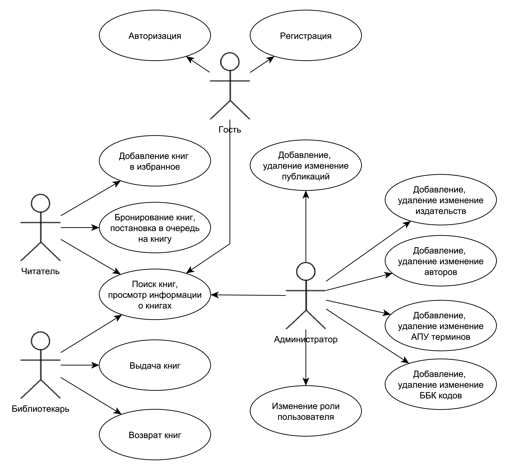
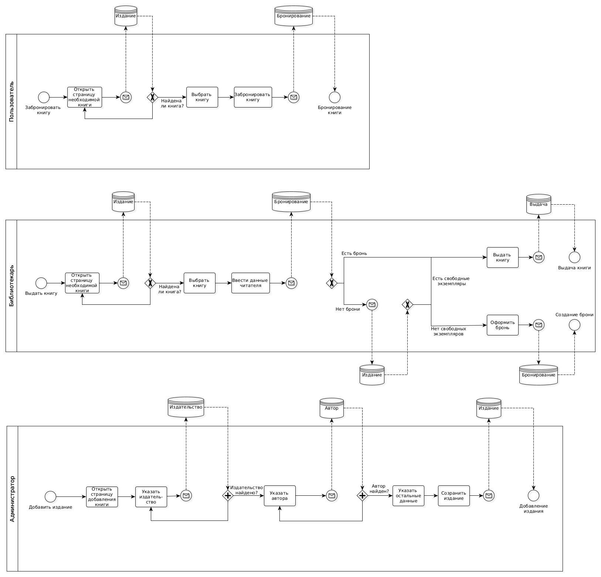
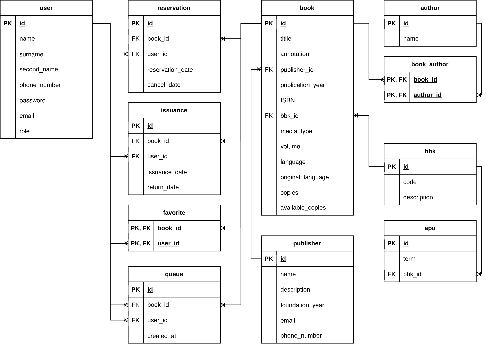
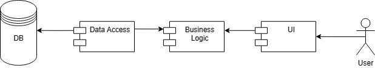
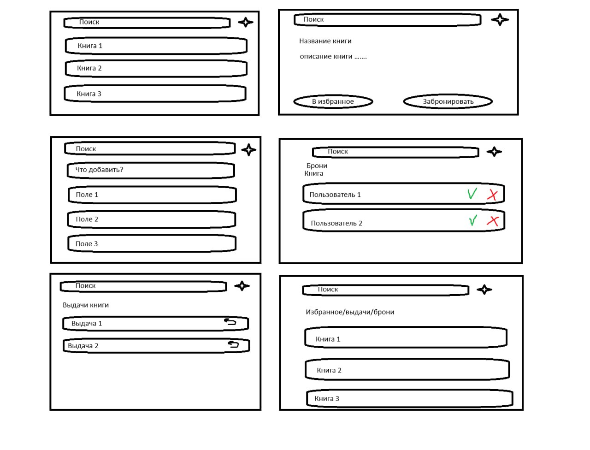

Приложение библиотеки
a. Цель работы
Разработать библиотечное приложение, которое буде позвалять пользователям не только бронировать книгу, но и вставать на книгу в очередь, чтобы бронь устанавливалась автоматически, когда освободиться экземпляр
b. Перечень требований
Сервис фиксирует выдачу и возврат книг, позволяя пользователям записываться в очередь на интересующие издания. Читатели могут просматривать доступные книги, свои текущие бронирования и полученные книги. Библиотекари управляют каталогом, отслеживают возвраты и регулируют очереди. Администраторы имеют возможность добавления новых сущностей.
c. Use-case diagram

d. BPMN

e. Пользовательские сценарии
- Гость: авторизируется, регестрируется, выполняет поиск книг, просмотр информации о книгах;
- Читатель: выполняет поиск книг, добавляет книги в избранное, бронирует книги, встает в очередь на книгу;
- Библиотекарь: поиск книг, просмотр информации о книгах, просмотр информации о пользователях, выдает книги, возвращает книги;
- Администратор: поиск книг, просмотр информации о книгах, добавление/изменение/удаление любой сущности.
f. ER-диаграмма

g. Технологический стек
- Тип приложения: Android-приложение
- Язык программирования: Kotlin;
- Server (Framework): Ktor;
- Unit-test (Framework): JUnit;
- СУБД: PostgreSQL;
h. Диаграмма БД

i. Компонентная диаграмма системы

j. Экраны будущего web-приложения
